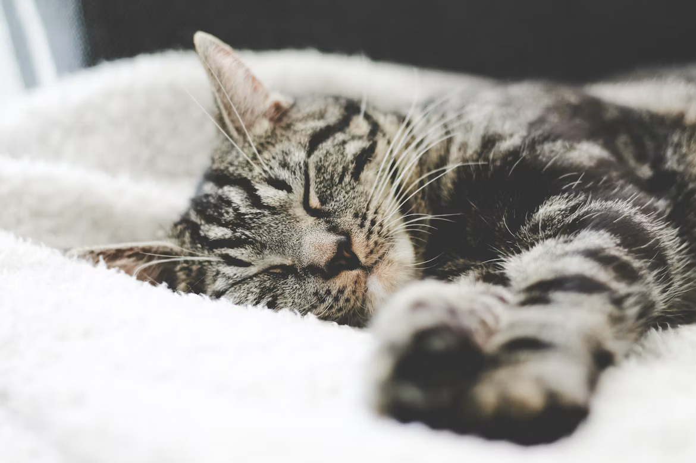

Meet the Cats
Like a well-loved heirloom, some of the sweetest friendships are often built over time. Meet our senior cats and discover the unique personalities that make our café feel like home.
Why Senior Cats
Every senior cat is a precious gem, with a story to tell and an immesurable amount of love to give. Though they are often overlooked in shelters, their age only adds to the charm of their unique personalities, endearing quirks, and fimilar routines. These treasured souls deserve to be adored, pampered, and given a loving home where they can truly shine.
One of the joys of adopting a senior cat is discovering a personality that's already blossomed. Whether they're a devoted lap cat, a curoius little explorer, or an independent soul who enjoys their quiet moments, there's something special about finding a cat whose personality fits naturally into your life. Every gentle purr, playful moment, and affectionate gesture becomes another memory worth treasuring.
Common Care Needs
A little extra attention can make a wonderful difference in a senior cat's quality of life. Understanding their changing needs helps keep them helthy, comfrotable, and happy.
- Veterinary Care: Schedule regular checkups to monitor their health and catch potential concerns early.
- Nutrition & Hydration: Provide a balanced diet suited to their individual needs and encourage regular water intake.
- Dental Health: Monitor their teeth and gums, and discuss appropriate dental care with a veterinarian.
- Mobility & Care: Watch for signs of stiffness or difficult jumping, climbing, and moving around.
- Behavioral Changes: Pay attention to changes in appetite, litter box habits, energy, and personality.
Creating a Comfy Home
A cozy home can make all the difference for a senior cat. Small, thoughtful adjustments can help them feel more safe, comfortable, and independent as their needs change.
- Easy Access: Choose low-entry litter boxes and keep fod and water within reach.
- Cozy Resting Spots: Provide soft beffing in warm, peaceful areas of the home.
- Gentle Mobility Support: Using ramps or pet stairs help them reach their favorite napping areas with ease.
- Play & Enrichment: Offer gentle playtime, interactive toys, and opportunites to explore.
- Familiar Routines: Maintain a predictable environment with consistent feeding times and quiet spaces.
Planning Ahead
Every precious gem deserves a lifetime of care. Preparing for a senior cat's changing needs means considring both everyday expenses and unexpected veterinary visits. With a little planning, you can focus on what matters most: giving them a happy, comfortable home.
- Routine Expenses: Maintain a predictable environment with consistent feeding times and quiet spaces.
- Emergency Savings: Set aside money when possible for unexpected illnesses, injuries or urgent veterinary treatment.
- Pet Insurance: Explore coverage options for older cats. Compare premiums, deductibles, exclusions, and pre-existing condition policies.
- Affordable Veterinary Care: Research local nonprofit clinics, veterinary assitance programs, and low-cost wellness services.
Caring for a senior cat doesn't mean facing every challenge alone. Community resources and thoughtful preparation can help make their golden years a little brighter.
Interested in Adopting?
Has one of our little gems captivated you? Give them a loving home where their next chapter can shine just as brightly.